The following definitions are from http://www.omg.org/spec/SysML/1.2/.
SysML supports the specification, analysis, design, and verification and validation of a broad range of complex systems.
These systems may include hardware, software, information, processes, personnel, and facilities. SysML is designed to provide simple but powerful constructs for modeling a wide range of systems engineering problems. It is particularly effective in specifying requirements, structure, behavior, and allocations and constraints on system properties to support engineering analysis.
The SysML Designer offers you five representations :
This section describes how to start using the SysML designer either from existing SysML models or by creating a new one.
To retrieve the example, click on File > New > Example...
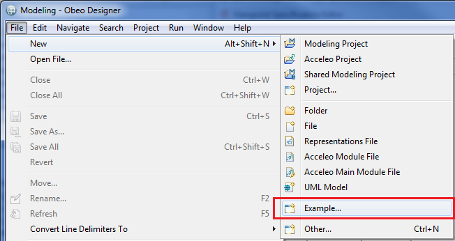
Select the example called Simple AlarmRadio System Example in the SysML category.
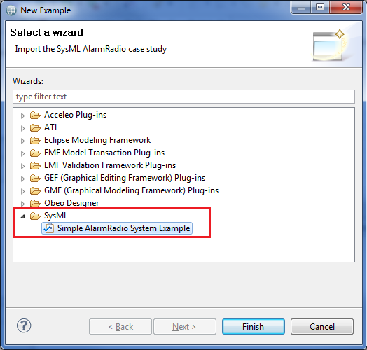
Now, the example is in your workspace. Expand the AlarmRadio.aird file and select the representations already created !
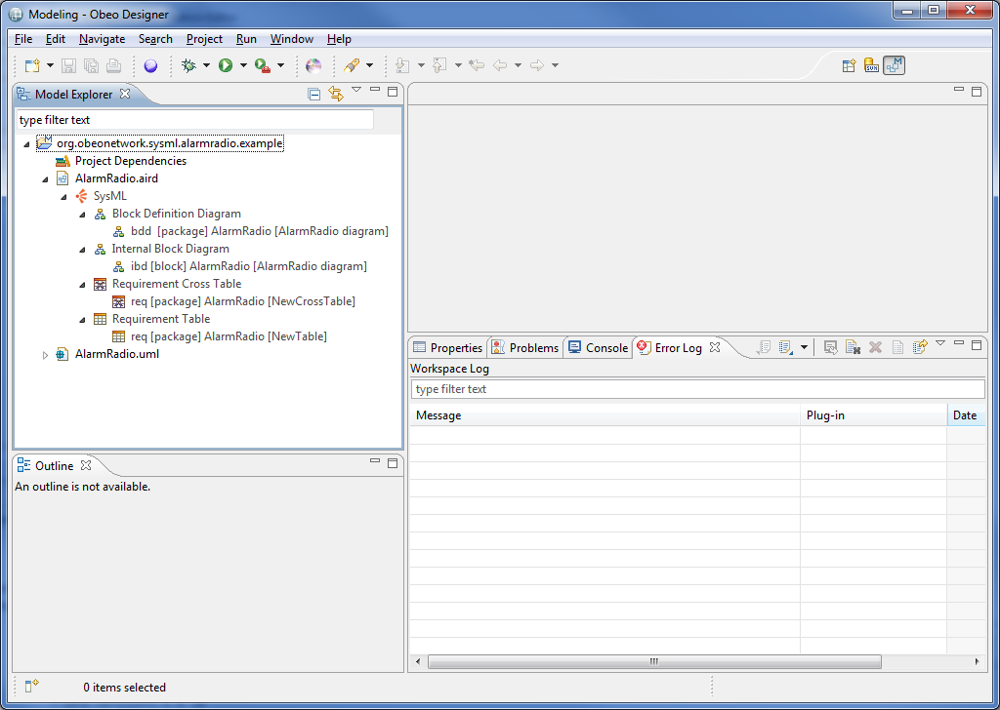
To create a new SysML project, enable the Modeling Perspective, and click on File > New > SysML Project...
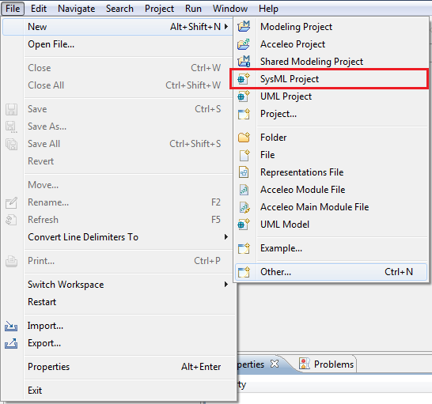
You can also choose the SysML Project by clicking on click on File > New > Example... and then select the SysML Project in the Viewpoint > Modeler category.
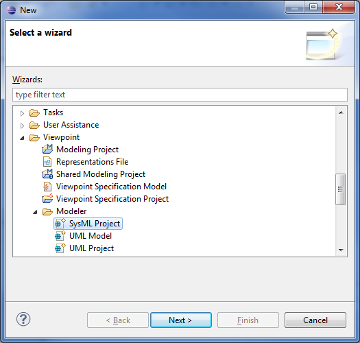
You can choose specific name for the project and the root element for the project on the next pages.
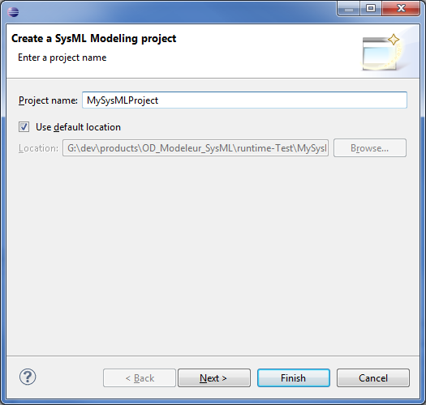
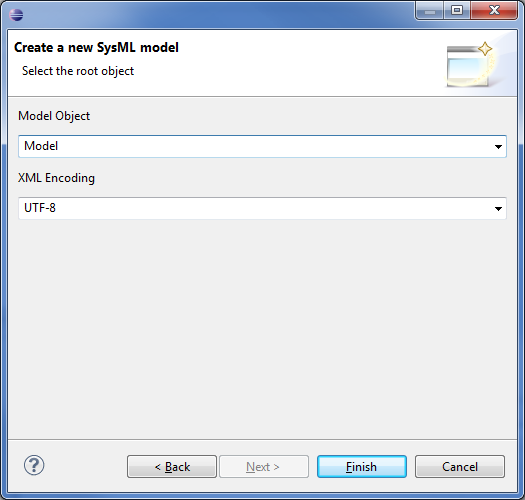
When you press the Finish button, the projects gets created and automatically enabled the SysML viewpoint.
Now you can right click on the displayed package to create all the available diagrams that fits to your needs.
To create a new SysML design on existing SysML and UML models, simply drag & drop the models in the Project or use the Add Model action available on the Project Dependencies item.
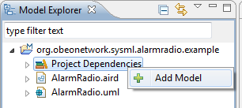
The BDD, Requirements Table and Requirements CrossTable representations can be defined on a Package element.
Just right-click on a Package element and select the representation you want :
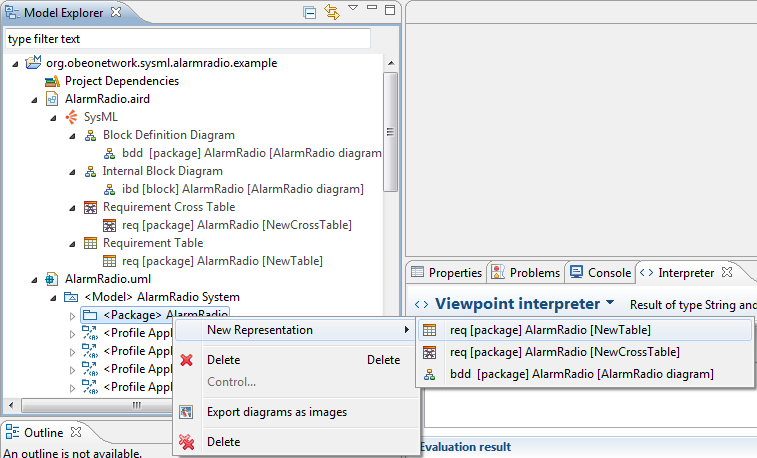
The IBD representation can be defined on a Block element.
Just right-click on a Block element and select the representation you want :
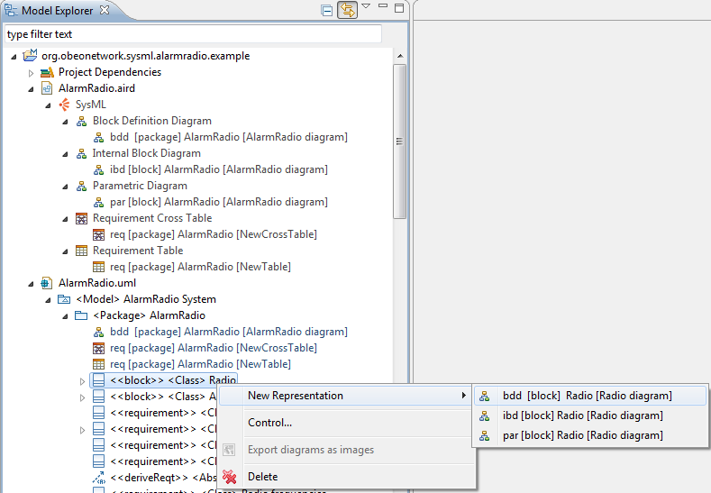
The PAR representation can be defined on a Block element.
Just right-click on a Block element and select the representation you want :
The Requirements Table and CrossTable are already existing when you use the Obeo SysML Designer.
Blocks are modular units of system description. Each block defines a collection of features to describe a system or other
element of interest. These may include both structural and behavioral features, such as properties and operations, to
represent the state of the system and behavior that the system may exhibit.
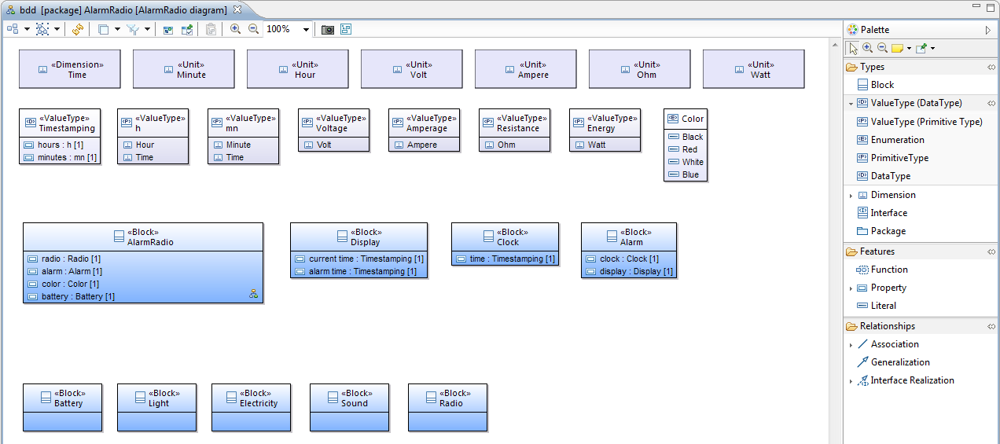
To create a Block, just select the Block element in the Palette, and click anywhere in the Diagram.
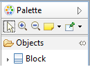
To edit a Block, just type F2 on a Block element or click one time on the name.
To delete a Block, just type Suppr on a Block element.
The way is the same for other elements in the Palette.
You can navigate to the internal block diagram representation of a Block element from two ways.
The first way is to double-click on a Block element. If the IBD representation does not exist for the selected Block, a pop-up will appear to ask you the name of the future IBD.
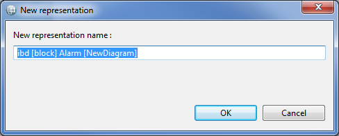
The second way is to right-click on the Block element and select the Navigate menu.
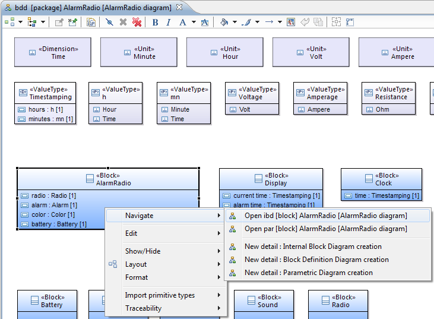
With the second way, you can also choose to navigate or create a Parametric Diagram.
You can display the requirements satisfied or verified by the blocks contained in your diagram.
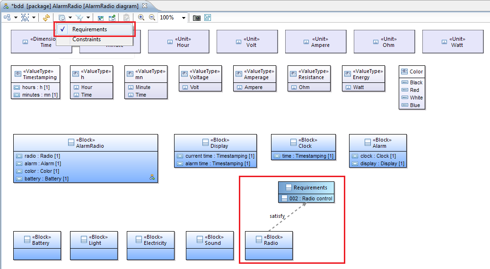
You can display the constraints blocks and the properties of blocks constrained by constraints blocks contained in your diagram.
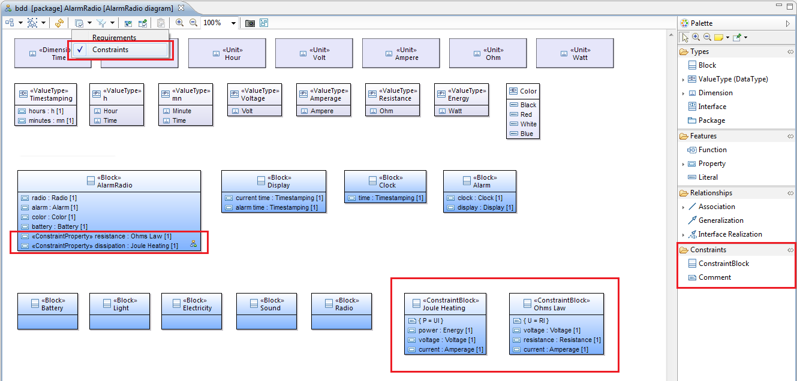
The Constraints layer add two tools to the Palette in the Constraints Section. One tool to create a Constraint Block and one tool to add a comment in a Constraint Block.
A block can include properties to specify its values, parts, and references to other blocks.
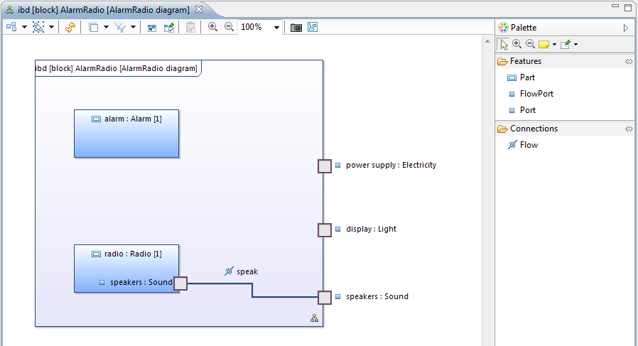
To create a Part, just select the Part element in the Palette, and click anywhere in the Diagram.
To edit a Part, just type F2 on a Part element or click one time on the name.
To delete a Part, just type Suppr on a Part element.
The way is the same for other elements in the Palette.
You can navigate to the block definition diagram representation of a Block element by right-click on the Block element and select the Navigate menu. You can also create/navigate to the parametric diagram representation of a Block element by right-click on the Block element and select the Navigate menu.
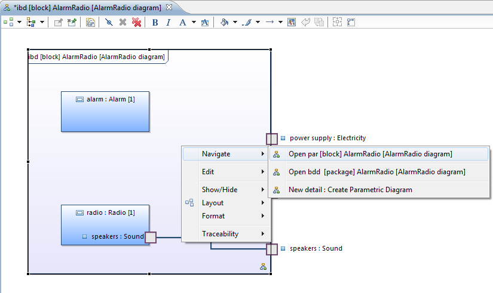
Parametric diagrams include usages of constraint blocks to constrain the properties of another block. Constraint blocks provide a mechanism for integrating engineering analysis such as performance and reliability models.
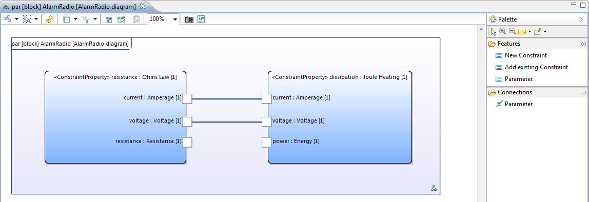
To create a Constraint, just select the New Constraint element in the Palette, and click in the Block container part of the Diagram.
To add an existing Constraint, just select the Add existing Constraint element in the Palette, and click in the Block container part of the Diagram.
To create a Parameter, just select the Parameter element in the Palette, and click in a Constraint.
To edit a Constraint or a Parameter, just type F2 on a Constraint or Parameter element or click one time on the name.
To delete a Constraint or a Parameter, just type Suppr on a Constraint or Parameter element.
You can navigate to the internal block diagram representation of a Block element by right-click on the Block element and select the Navigate menu.
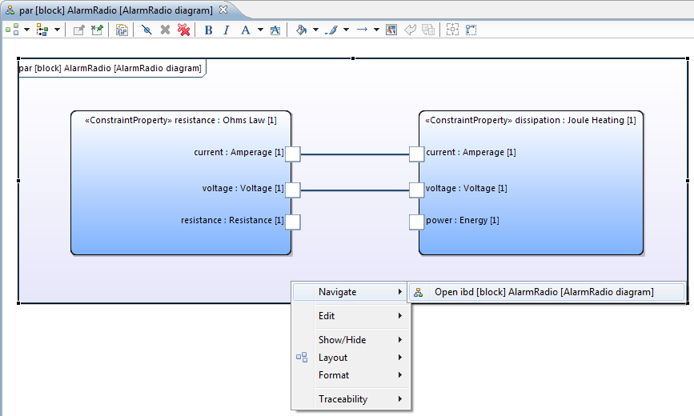
You can display the Value Binding Layer in order to instanciate the constraints created by binding values (owned by Blocks of your model) to parameters.
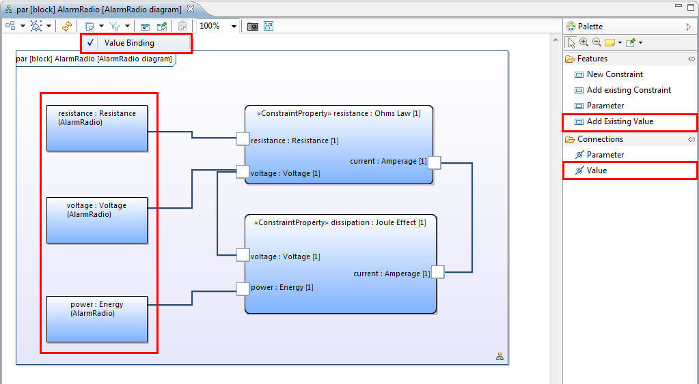
The Requirements Table allows you to define the requirements of your system.
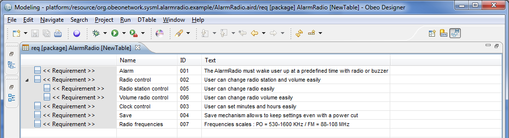
You can create a Requirement by click on the appropriate button on the tool bar locate above the table.
To create a SubRequirement, click on the appropriate Requirement , then right-click and select "Create SubRequirement" in the menu.
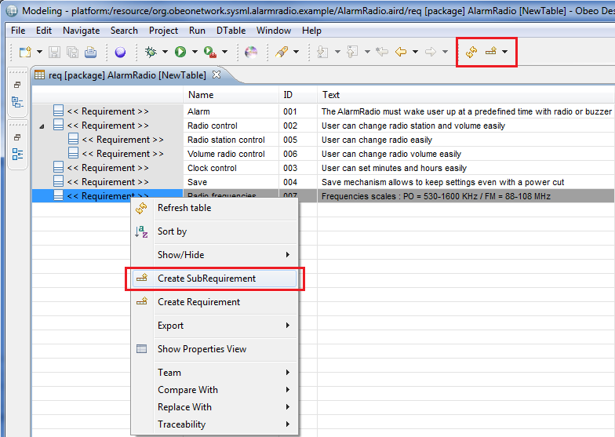
To edit a requirement, just type F2 or double-click on the cell you want to edit.
To delete a requirement, right-click on the requirement you want to delete and select Delete Requirement.
The Requirements CrossTable allows you to relate the requirements to other modeling elements.
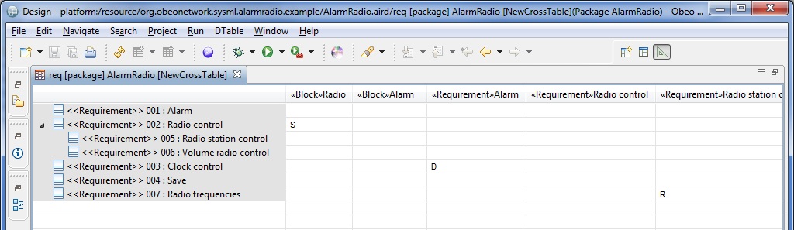
To add a relation just type the appropriate character on a cell.
To delete a relation just delete the character typed previously on a cell.
There are four relations available :
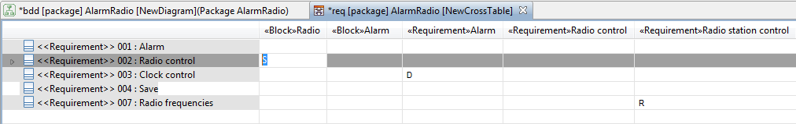
After adding a satisfaction/verification relation you can show it in the BDD. (see BDD representation > Requirements Layer)